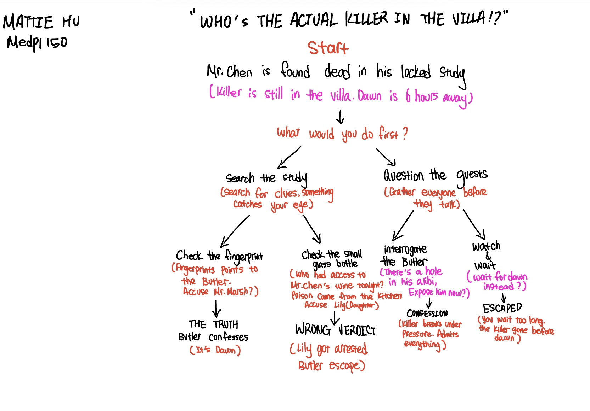

“WHO’S THE ACTUAL KILLER IN THE VILLA!?” is an interactive detective story set in a private villa during a winter blizzard. You play as a detective who discovers the host, Mr. Chen, dead in his locked study. With four suspects trapped inside and only six hours until dawn, you must uncover the truth before time runs out. Your choices, whether to search for physical evidence or interrogate the guests, and who you ultimately choose to accuse, will lead you to one of four possible endings.

 Go back to homepage
Go back to homepage